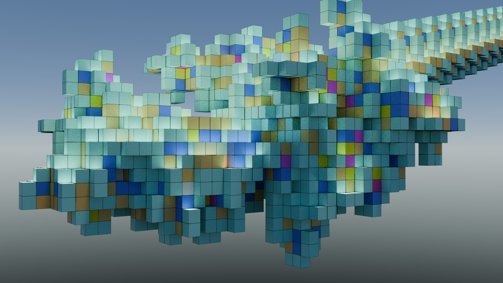

:: PROJECT GALLERY ::
The Hydroponics Pot Adaptor uses a regular pot and turns it into an hydroponic system. Plus,
it lets you stack pots to build your own grow tower, and attach up to 5 net pots in each adaptor.
Perfect for small areas and big harvests! Work in progress.
[ Designed with Fusion360, animation with Three.js ]
[ Designed with Fusion360, animation with Three.js ]

Origami Designs! I present to you the Cube crafted
from a single sheet of paper, unlike most origami cubes that rely on modular
construction. And the Phone Holder! The Cube has been published in OrigmaiUSA.
[ Check out the magazine in OrigmaiUSA ]
[ Check out the magazine in OrigmaiUSA ]

Langtons Ant in 3D is an extension of the original 2D cellular automaton, where an ant moves on a grid of cells that can flip states based on simple rules. In three dimensions,
the ant moves through a 3D lattice. At each step, the ant turns, flips the current cell's state, and moves forward along one of the six
possible directions. Despite the simplicity of its rule, the system evolves into intricate, emergent patterns over time.
This 3D generalization opens the door to a variety of fascinating behaviors and has been explored in visualizations similar to the ones featured in Numberphile,
demonstrating how simple rules can produce complex, space-filling trajectories in three-dimensional environments.
[ Rendered with Blender, programmed with Python ]
[ Rendered with Blender, programmed with Python ]

Representation of Recamans sequence
is an integer sequence defined by a simple recursive rule: start at 0, and for each subsequent term,
subtract the step number n if the result is positive and not already in the sequence; otherwise, add n. Formally,
\[
a_n =
\begin{cases}
0 & \text{if } n=0\\
a_{n-1} - n & \text{if } a_{n-1} - n > 0 \text{ and not already in the sequence} \\
a_{n-1} + n & \text{otherwise}
\end{cases}
\]
This generates a looping path through the integers,
resulting in surprising patterns and occasional repetitions. The sequence gained wider popularity through a Numberphile video,
where they used an arc-based visual to illustrate how a simple rule can lead to complex mathematical behavior.
[ Rendered with Blender, programmed with Python ]
[ Rendered with Blender, programmed with Python ]

The Kolakoswky sequence is a fascinating mathematical sequence defined by a simple rule: it describes itself in terms of runs of numbers. Starting with 1, the sequence is formed by reading off the lengths of consecutive runs of 1s and 2s in the sequence itself. For example, it begins as 1, 2, 2, 1, 1, 2, 1, 2, 2, 1... This self-describing pattern makes the Kolakoswky sequence an interesting subject in the study of combinatorics and sequence theory, showcasing how complex structures can emerge from simple, recursive rules.
[ Rendered with Blender, programmed with Python ]
[ Rendered with Blender, programmed with Python ]
I'm designing a modular stool meant to be 3D printed in separate pieces and easily assembled without tools. The goal is to create a sturdy stool the pieces of which fits on standard 3D printers.
The design uses interlocking parts. I'm currently refining the joints, print settings, and overall structure. The project is still in progress, with ongoing tests to ensure printability.
[ Designed with Fusion360, rendered in Blender ]
[ Designed with Fusion360, rendered in Blender ]

Bookish Case for an SSD memory card. Designed for a CadCrowd challenge.
[ Designed with Fusion360, rendered in Blender ]
[ Designed with Fusion360, rendered in Blender ]